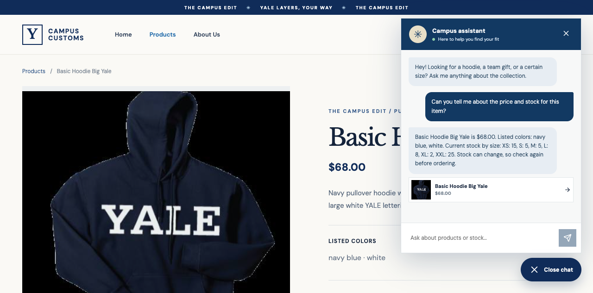
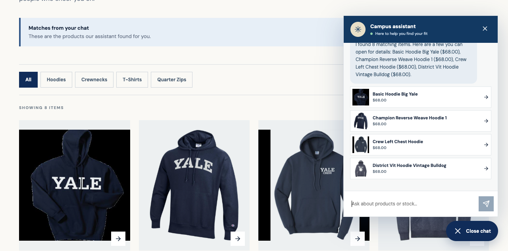
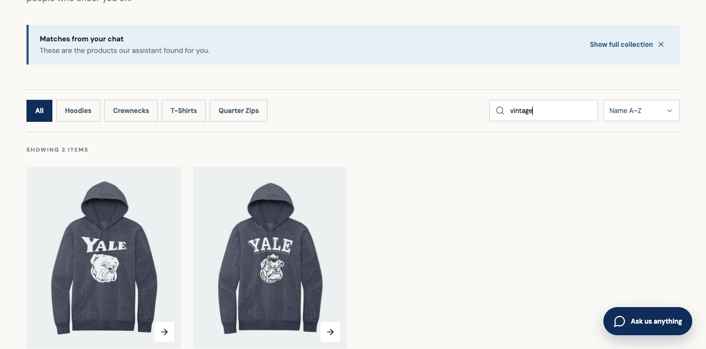

Campus Customs: Live App Check
These screenshots came from the running React site on October 3, 2026. The chat answers shown here used the local database fallback because the supplied Portkey credential was rejected by the gateway.
1. Honest price and stock

On the Basic Hoodie Big Yale page, the chat reports the $68 price and real stock by size from SQLite. It recognizes “this item” from the current page.
2. Chat search updates the page

After “What hoodies do you have?”, eight matching items appear as clickable cards in the Products grid. The chat also shows compact links to the same products.
3. Product search filter

Typing “vintage” narrows the chat results to two relevant hoodies. The search box, result count, and matching images make the filter easy to check.